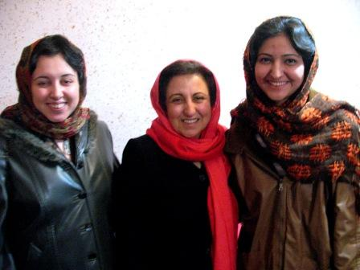
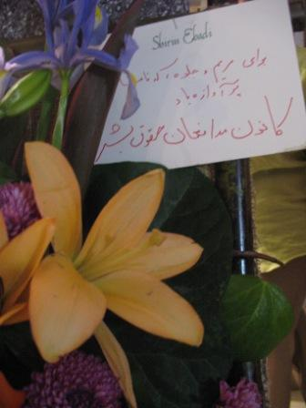

پذيرش > کمپین در بند > پروین اردلان،جلوه جواهری، مریم حسین خواه، ناهید کشاورز > عبادي: ما نسل هاي قديم تر حرفي نداريم در مقابل جوانان بزنيم جزآفرين بر همت (...)


 عبادي: ما نسل هاي قديم تر حرفي نداريم در مقابل جوانان بزنيم جزآفرين بر همت شما عبادي: ما نسل هاي قديم تر حرفي نداريم در مقابل جوانان بزنيم جزآفرين بر همت شما
19 دی 1386 - - نسخه قابل چاپ
تغيير براي برابري-آيدا سعادت: شنبه شب پانزدهم دي ماه، شيرين عبادي در نشستی با برخی از اعضای کمپین یک میلیون امضا و مريم حسين خواه و جلوه جواهري پس از آزادي از زندان ديدار كرد. دراین دیدار علاوه بر اعضای کمپین، لیلا علی کرمی و نسرین ستوده از وکلای کانون مدافعان حقوق بشر، شهلا اعزازی، ژیلا شریعت پناهی، مریم ومعصومه ضیا و بهاره هدایت و ژیلا بنی یعقوب نیز حضور داشتند.
شیرین عبادي در اين ديدار به پايداري و مقاومت مريم و جلوه و اقدامات موثر آنان اشاره كرد و گفت :« با وجود ناراحتي بسيار از وضع پيش آمده ، بارها در دلم به شهامت مريم، جلوه، بهاره و دلارام آفرين گفتم اما همه مي دانيم كه شهامت و پايداري شما دارد به نتيجه مي رسد.»
عبادي ضمن اشاره به قطعنامه ي صادره از سوي مجمع عمومي سازمان ملل متحد در خصوص وضعيت حقوق بشر در ايران گفت:« در اين قطعنامه براي اولين بار يك فراز عمده به حقوق زنان و فعالين جنبش زنان اختصاص داده شده و توجه جامعه جهاني به اين وضعيت ناشي از مقاومت مريم و جلوه و ساير فعالان حقوق زنان در زندان است.» وي گفت:« مريم و جلوه با ايستادگي بر چارچوب عقيدتي خود، اين مدت حبس را تحمل كرده و سربلند از زندان بيرون آمدند. آنان با تجهيز كتابخانه ي زندان و ساير اقدامات خود در طي مدت بازداشت همت كردند و كاري را انجام دادند كه طي مدت سي سال گذشته انجام نشده بود.»
وي همچنين به دعوت مجلس از فعالان حقوق زنان براي همكاري با آنان اشاره كرده و آن را نتيجه ي پايداري هاي انجام شده دانست و گفت اين يك قدم است و كيلومتر ها راه از همين قدم هاي كوچك شروع مي شود. رئيس كانون مدافعان حقوق بشر گفت :« روزي كه حكم دلارام قطعي شد و از او خواستند كه خود را معرفي كند دلارام ايستاد و گفت اگر لازم باشد خود را معرفي مي كنم و حبس مي كشم و ديديم كه آخر كار به كجا كشيد. به دنبال آن نامه اي براي آقاي شاهرودي نوشته شد كه كميته ي مادران آن را پي گيري كردند اما آنچه دلارام را از زندان نجات داد چند سطر نامه ي نوشته شده ما ودیگران نبود، شهامت دلارام بود وقتي در مقابل خبرنگاران ايستاد و گفت به زندان مي رود.»

شيرين عبادي با تاكيد بر حفظ پرنسيب هاي اخلاقي و چارچوب موجود بر حفظ آن تاكيد كرد و گفت:« زنان ايران در اين شرايط يك قدم به جلو برداشتند و اين پيش رفتن مديون رفتارهاي همين دختران جوان بود وگرنه نسل ما هر چه توانست انجام داد و كار را به همين دختران و جوانان وا گذاشت و خوشحالم كه شما خود پيشرو هستيد و به جاي دنباله روي صرف از نسل قبلي، پيشتاز شده وبا رها كردن قهرمان هاي خيالي بر روي واقعيات موجود چشم باز كرديد.»
عبادي در پايان با اشاره به زحمات وكلاي عضو كانون مدافعان حقوق بشر از تمامي آنان تشكر كرد و گفت:« وكلايي كه با كانون همكاري مي كنند حق الوكاله اي در مقابل كارهايي كه براي شما انجام مي دهند دريافت نمي كنند ولي خود ماليات حق الوكاله اي كه ازشما نگرفته اند را به دولت مي پردازد.»
زندان بان ها مي گفتند بايد ايستادگي كرد
در اين ديدار مريم حسين خواه ضمن تشكر از تلاش هايي كه دوستان كمپيني و وكلا انجام دادند به شناخت زندانيان زن از كمپين و جنبش زنان اشاره كرد و گفت :«كمپين را در زندان خيلي خوب مي شناختند و اين مسأله يك مقدار به دليل دستگيري زنان در سيزده اسفند بود و يا كساني كه در يك سال اخير به زندان آمده بودند در اين خصوص اطلاعاتي داشتند. همين امر باعث شده بود كه در زندان به سادگي ما را بپذيرند و به خوبي با ما ارتباط برقرار كنند. حتا زندان بان ها كمك مي كردند و دلداري هم ميدادند و مي گفتد آقاي عمويي اين همه سال كشيد، نلسون ماندلا هم همينطور و بايد مبارزه كرد. در مقابل خواسته هاي ما جبهه نمي گرفتند اما خب آنها هم به وظايفشان عمل مي كردند ومامور بودند و معذور.»
مريم با اشاره به اين كه 45 روز تجربه ي بودن در زندان اوين تجربه ي خاصي بود گفت :« مسائلي كه ما بيرون از زندان مي ديديم حكم تئوري داشتند و در زندان مي شد نمونه هاي عيني تمام اين تئوري ها را به چشم ديد و لمس كرد. من در عمرم نه زن قاتل ديده بودم و نه زن موادي يا كساني كه حبس هاي طولاني دارند. وضعيت زندان را بايد نوشت. اين سومين باري بود كه من به اوين مي رفتم و ده روز اول به عنوان يك خبرنگار حضور داشتم . يك دقيقه هم آرام نداشتم و سعي مي كردم از تمام روابط زنان زنداني سر در بياورم اما بعد از ده روز كه هويت خود را به عنوان يك زنداني پذيرفتم ماجرا شكلي متفاوت و سخت تر را پيدا كرد.»
مريم سخنانش را با پيام راحله به پايان برد :« راحله پيش از اعدام مي گفت خوشحال است كه براي اولين بار در زندگي اش مي بيند كه كساني هستند كه به او فكر مي كنند و بيرون از زندان برايش تلاش مي كنند واين مسأله از زنده ماندنش برايش مهمتر بوده است.»
چاره اي جز تغيير قوانين تبعيض آميز نيست
جلوه جواهري نيز با اشاره به فعاليت هاي دوستان كمپيني و سايرين در بيرون از زندان اقدامات آنان را مايه ي دلگرمي توصيف كرد و گفت:« اين مسأله باعث مي شد كه ما در داخل زندان بهتر بتوانيم بر سرمواضع خود ايستادگي كنيم.» جلوه با اشاره به تلاش هاي كميته ي مادران كمپين و وكلا و خانم عبادي گفت:« اين فعاليت ها نيروي جديدي به ما مي داد و ما مي دانستيم كه اگر ما در زندان روي نداشتن وثيقه تاكيد مي كنيم افرادي در بيرون از ما حمايت مي كنند .»

جلوه در توصيف شرايط داخل زندان اوين گفت :« تصويرما اين است كه شرايط داخل زندان با شرايط بيرون متفاوت است اما زندان در واقع كوچك شده ي محيط بيرون است و خيلي ها به خاطر اتفاقات ساده اي در زندان هستند اما مشكلات قانوني به خصوص طلاق و قصاص و سن ازدواج عمده ترين مسائل تاثير گذار در زندان هستند و اين مشكلات مربوط به طبقه ي خاصي نيست.»
جلوه با اشاره به اعدام راحله زماني گفت:« راحله زن روستايي و بي سوادي كه در سن پانزده سالگي در روستا ازدواج كرده و شرايط بسيار سختي را تحمل كرده بود و بارها به خانواده اش گفته بود كه مي خواهد طلاق بگيرد. اما قانون از او حمايتي نكرد.»
وي ادامه داد:« تحليل زنان زنداني از قانون بسيار جالب بود و بسياري از اين زنان با آگاهي اندك خود به دليل اين كه از نزديك مسائل و معضلات قانوني را تجربه كرده اند سعي مي كنند مسائل حقوقي را تحليل كنند و نياز به كمك دارند. اكثر اين زنان با اعدام و قصاص مخالف بودند .»
جلوه گفت:« وقتي مسائل داخل زندان را از نزديك مي بينيد به اين باور مي رسيد كه چاره اي جز تغيير قوانين تبعيض آميز نيست . افرادي مانند ما از حمايت هاي اجتماعي بر خوردارند اما هر كسي مي تواند به خاطر يكي از مسائلي كه اين زنان درگيرش بودند به زندان برود بي آن كه از حمايت اجتماعي خاصي برخوردار باشد واين موضوع نشان مي دهد كه بايد به دنبال راه حلي براي اين مسائل بود.»
در ادامه ي اين ديدار گوهر بيات مادر جلوه جواهري و زهره ارزني نيز به اقداماتي كه طي مدت زنداني شدن جلوه و مريم انجام شده بود اشاره كرده و كميته هاي كمپين گزارشي از اقدامات و فعاليت هاي انجام شده را ارائه كردند.
ارسال به
بالاترین
،
توییتر
،
فریندفید
،
فیسبوک
در همين بخش :
 بهاره هدایت را آزاد کنید؛ درخواست ۴۵۵ تن از فعالان زنان، دانشجویی واجتماعی از قوه قضاییه بهاره هدایت را آزاد کنید؛ درخواست ۴۵۵ تن از فعالان زنان، دانشجویی واجتماعی از قوه قضاییه
بیانیه بیش از ۱۵۰ تن از مدافعان حقوق بشر بین المللی برای آزادی بهاره هدایت و مریم شفیع پور
ششمین روز از کمپین «ده روز با بهاره هدایت» با عنوان «روز سلامت»
پیام ضیا نبوی و مجید دری از زندان کارون اهواز به کمپین«ده روز با بهاره هدایت»
روز پنجم از کمپین ده روز با بهاره هدایت:« بهاره، یک فرزند و یک خواهر است»
ديگر بخش ها :
طرح یک میلیون امضا
|
مقالات
|
سایت نوشته ها
|
اخبار
|
گزارش كمپين
|
گفت و گو
|
علیه سکوت
|
كوچه به كوچه
|
نامه های شما
|
گزارش ویژه
|
گفتگو با اعضا
|
ویژه سالگرد کمپین
|
تصویر برابری
|
دل آرام علی
|
تریبون
|
مقالات
|
تاریخ شفاهی
|
خارج از چارچوب
|
کتابخانه
|
درباره کمپین
|
کمپین در شهرها
|
کمپین در بند
|
صدای تغییر
|
ویژه 22 خرداد
|
لایحه حمایت از خانواده
|
گالری
|
عشا مومنی
|
امیر یعقوبعلی
|
خدیجه مقدم
|
راحله عسگری زاده و نسیم خسروی
|
پروین اردلان،جلوه جواهری، مریم حسین خواه، ناهید کشاورز
|
زینب پیغمبرزاده
|
سعیده امین، سارا ایمانیان، محبوبه حسین زاده، ناهید کشاورز و همایون نامی
|
احترام شادفر
|
نسیم سرابندی زاده،فاطمه دهدشتی
|
وبلاگ مهمان
|
پرونده خرم آباد
|
دستگیری ها
|
مریم مالک
|
پرستو اللهیاری
|
مهرنوش اعتمادی
|
سمیه رشیدی
|
Other Languages
|
همراهان
|
«فراخوان کمپین ده روز با بهاره هدایت»
| English
|